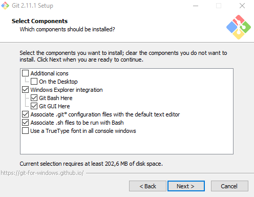
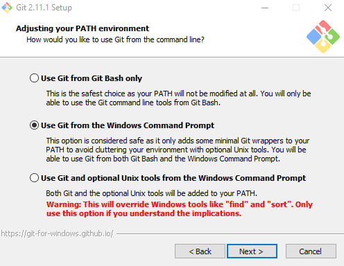
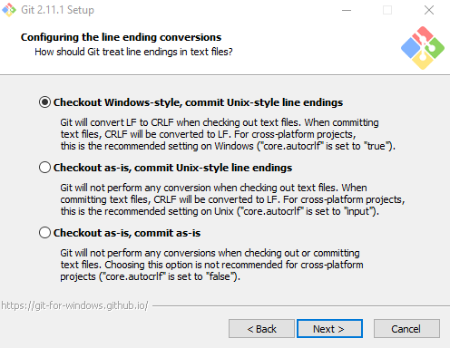
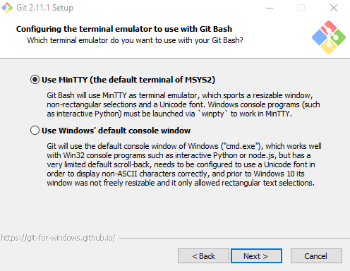
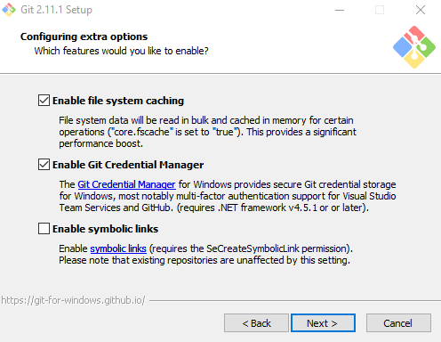

Git
Introducción
Git es un software de control de versiones gratuito y de código abierto, es decir, un programa que nos permite gestionar los cambios realizados en la realización de un proyecto.
Git permite, de forma fácil y rápida, llevar un mejor control de los numerosos archivos de código que se pueden generar durante un proyecto. Entre otras funcionalidades, nos da la posibilidad de conocer quién ha realizado un cambio o recuperar versiones de código anteriores.
Algunas de las características más importantes de Git son: su sistema de ramas, que nos permite tener múltiples ramas locales en las que trabajar y que pueden ser completamente independientes unas de otras o que se trate de un sistema distribuido lo cual hace posible que cada desarrollador tenga una copia del repositorio al completo.
Podemos encontrar más información acerca de Git en su web.
Instalación en Linux (Ubuntu)
La instalación de Git en Ubuntu es muy sencilla. Simplemente abrimos una terminal, insertamos la siguiente línea y el sistema llevará a cabo la descarga e instalación.
$ apt-get install git
Instalación en Windows
Para instalar Git para Windows nos descargamos el instalador desde aquí.
Una vez completada la descarga ejecutamos el instalador.
- Leemos el contrato de licencia y elegimos la ruta de instalación
Seleccionamos los componentes opcionales que queremos que sean instalados

Escogemos si queremos utilizar Git sólo desde la Bash de Git o también desde la terminal de Windows

Debemos configurar como tratará Git las terminaciones de línea

Podemos configurar que emulador de terminal usará Git Bash

Por último, podemos añadir algunas configuraciones extras

Terminamos de configurar la instalación de Git a nuestro gusto y clickamos Install para completar la instalación.
Uso de Git
En la página web de Git disponemos de un amplio apartado de documentación donde se explica detalladamente como empezar a trabajar con Git así como los distintos comandos disponibles y sus funciones. Podemos acceder a dicho apartado haciendo click aquí.